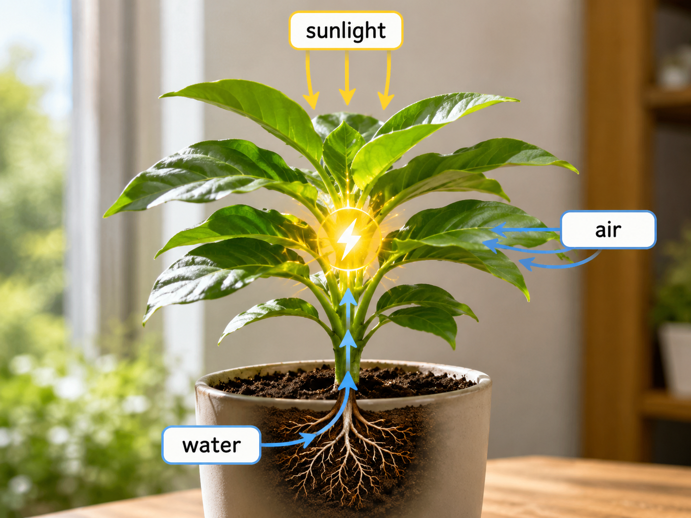
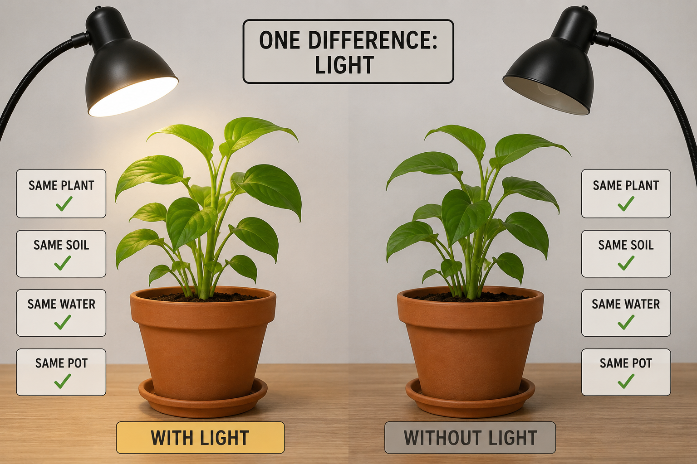
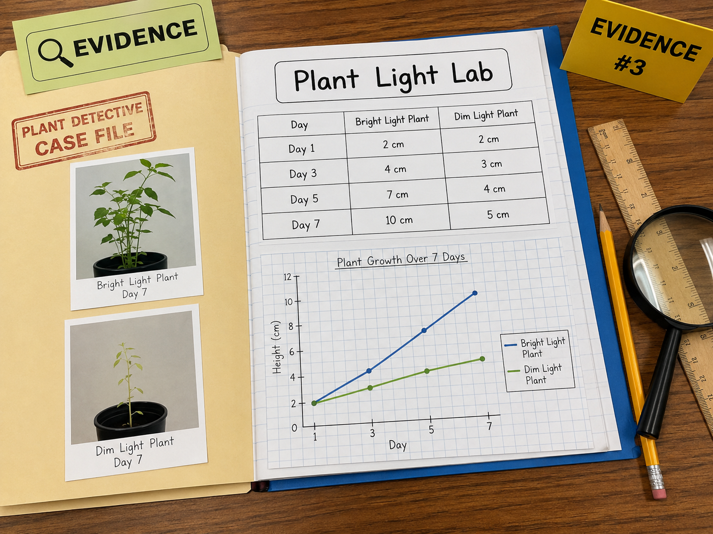

Keep this question in mind as you work. By the end, you'll have real data to answer it.
Start here. Learn the words you will use today.
Picture two small plants sitting side by side. They started out the same size. Seven days later, one is much taller. The other barely grew at all. What could cause that?
Good scientists notice before they explain. Don't guess the answer yet — just look carefully and write what you see.
These are the science words you'll use today. Tap each card to flip it and read the definition.
Copy this sentence carefully into your science notebook:
"A plant's growth rate changes depending on the conditions it lives in."
Now learn the main science idea.
Plants make their own food using sunlight. Without enough light, a plant can't make the energy it needs to grow tall and strong. This process is called photosynthesisphotosynthesisThe way plants use sunlight, water, and air to make their own food..
When a plant gets plenty of light, it grows faster. When light is weak or blocked, growth slows down — sometimes a lot.

In a fair test, scientists change only one thing at a time. In this investigation, the only difference between the two plants is light. Everything else — the soil, the water, the pot — stays the same.
That way, if the plants grow differently, we know light is the reason. The thing we change on purpose is called the variablevariableThe one thing a scientist changes on purpose in a fair test..

Scientists measure plant height in centimeters and record it in a data table. Then they build a graph to make the pattern visible. A graph turns rows of numbers into a picture you can read at a glance.
Real-World Connection: Farmers use this same kind of data to decide where to plant crops — in full sun or partial shade — depending on what each plant needs to thrive.
Light is a growing condition for plants. The more light a plant gets, the more energy it can make — and the faster it grows.
When we compare two plants under different conditions, any difference we find is evidence of how that condition affects growth.
Curious? Go Deeper
The reason plants bend and grow toward light is called phototropism. Inside the plant, a chemical called auxin builds up on the shady side of the stem. That side grows a little longer — which tips the plant toward the light.
Scientists who study this are called plant biologists. They do experiments just like the one you're doing today — but they often test dozens of plants at once and measure changes down to fractions of a millimeter. What you're practicing in this investigation is exactly how real science works.
Now test the idea yourself.

You'll need: Science notebook, pencil, colored pencils, and the case file image above.
You are the plant detective. Your job is to study the evidence, build a graph, find a pattern, and write a scientific explanation. Follow each step carefully.
📋 Sample Plant Data
| Day | Bright Light Plant | Dim Light Plant |
|---|---|---|
| Day 1 | 2 cm | 2 cm |
| Day 3 | 4 cm | 3 cm |
| Day 5 | 7 cm | 4 cm |
| Day 7 | 10 cm | 5 cm |
Copy the data table. Write the table above into your science notebook exactly as it looks. Include all four days and both plants.
Build a graph. Draw a bar graph or line graph showing plant height over time. Use one color for the bright-light plant and a different color for the dim-light plant. Add a title and label your axes.
Find the pattern. Study your graph. Look at where the two lines (or bars) are closest together and where they are farthest apart. Write one sentence describing the pattern you see.
Write an explanation. Write 2–3 sentences explaining what your data shows. Use the words evidence, condition, and growth rate somewhere in your answer.
Think about each question. Be specific — use numbers from your data, not just "one plant grew more."
Tell the story of this investigation from beginning to end — what the plants started as, what changed, and what you figured out. Use your graph and data to help you.
Think through each question on your own. Write your answers in your science notebook before moving on.
Check what you understand.
Show what you learned.
📋 Part A — Read the Data
Use the data table below to answer these questions in your notebook.
| Day | Bright Light Plant | Dim Light Plant |
|---|---|---|
| Day 1 | 2 cm | 2 cm |
| Day 3 | 4 cm | 3 cm |
| Day 5 | 7 cm | 4 cm |
| Day 7 | 10 cm | 5 cm |
📝 Part B — Short Answer
Write a complete sentence answer for each question.
What does your investigation tell you about how light affects plant growth?
What did you observe?
💡 Start with: "In my investigation, I noticed that…"
What does your data show?
💡 Start with: "The evidence in my data shows that…"
Why does that make sense?
💡 Start with: "This makes sense because plants need light to…"
📚 Try to use these words: evidence, condition, growth rate
🎨 Part C — Draw & Label
In your science notebook, draw both plants as they looked on Day 7. Label the height of each one and write the light condition next to each plant.
Submit your work on Canvas using one of these options:
Make sure your submission includes all of these: